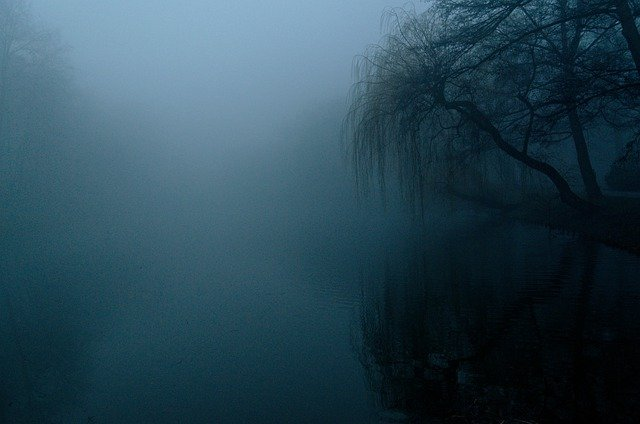
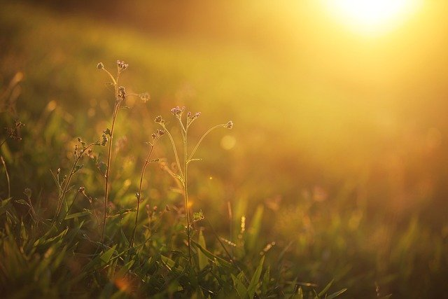
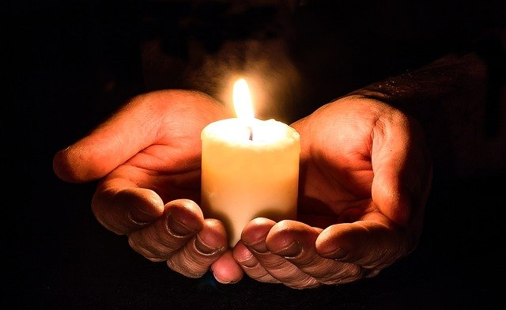

Dark
I am what I am. I am a girl of few words with much on her mind. I am a person who keeps to herself but won’t shut up at the same time. I am a deep, dark abyss that let’s all in but light. I am in search of confidence, but come up empty-handed half the time. I am a child desperately clinging to a blanket woven of doubt and fear. I am a face that won’t express how it truly feels. I am a smile painted on upside down and a frown that just wants to turn around. I am the mouth that won’t open when it really should. I am skin beginning to glisten, a pounding heart, and a mind that goes blank when heads start to turn.
Light
I am what I am. I am a girl who acknowledges her faults and accepts them, but I am not a girl who lets them define her overall. I am what I am. I am a passionate storm of tenacity and determination. I am the girl who won’t let the problem remain unsolved. I am a reader who won’t let a word go unread. I am a fierce competitor and a caring friend. I am able to understand another point of view but defend my own. I am independent. I am willing to accept help, but only after truly attempting a task first. I am a fifteen-year-old girl who looks twelve but that's no reason to underestimate me. I am what I am.
The Light in the Dark
I am what I am. I am a person who refuses to let my faults keep her from achieving my goals. I am exactly five feet tall but my ambitions give me an extra foot. I am an aspiring literary expert. I am accepting of knowledge and value education. I am willing to step up to the challenge and overcome any obstacles I face. I am preparing for the future though I still have much to learn. I am not perfect, but I hope for personal growth in the future. For now, I am what I am.